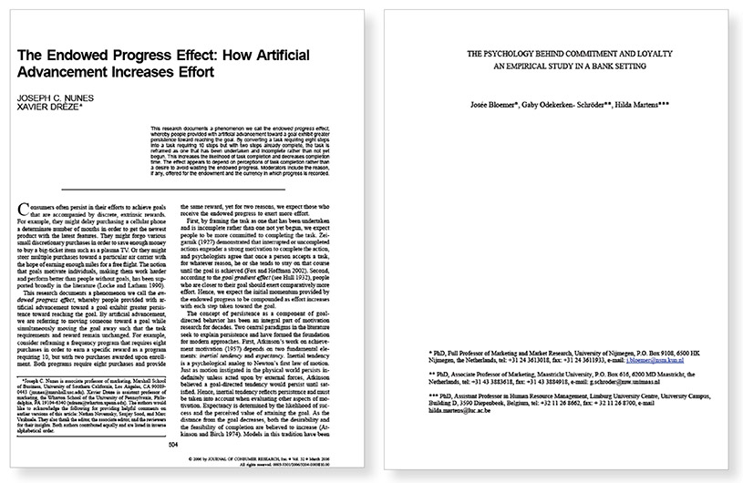
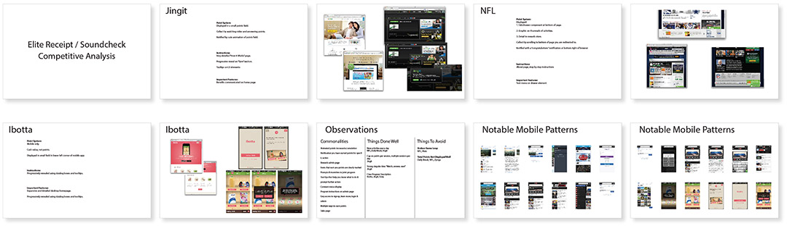
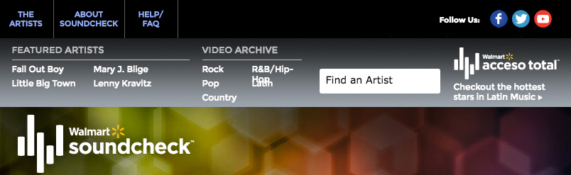

Design Planning
After seven years, The Walmart Soundcheck Platform needed an updated user interface and new methods to engage Walmart.com music shoppers. For the effort, I provided research, annotated wireframes, user flows, and other key UX techniques and artifacts for the redesign and integration of a new front end, gamification, and advertising features. The key objectives of the redesign were to:
- Remove superfluous elements and unused features.
- Provide incentives for user engagement.
- Make the experience more "Shopper Friendly"
- Align with current web trends and best practices.
A series of whiteboard workshops, sketches, and conversations with the development and analytics teams allowed me to bring in the perspective, insights, and validation for the concepts inspired by the market research and consumer behavior models. We also worked out details of the multipart sponsorship between Walmart, Tmobile, and Soundcheck and how each sponsor’s requirements would be implemented.
Research
Shopper Loyalty
Researching, the psychology of product loyalty, I discovered studies on "endowed progress," “artificial advancement,” “position involvements” and how these behaviors affect word of mouth and purchase intent.
Competitive Analysis
An analysis of the strengths, weaknesses, features, and market position of similar and inspirational properties revealed initial opportunities in video, mobile, and gamification that I documented in the form of a "Competitive Analysis", a PDF that was distributed to stakeholders for discussion.Commonalities
Animated points increase/accumulation
Notification that you have earned points for specific action
Rewards admin page
Items that earn you points are clearly marked
Prompts and incentives to joint program Tooltips that help you know what to do and prompt further action
Constant status display
Program instructions on admin page Easy access to signup, learn more, login and admin Multiple ways to earn points Sales page
Things Done Well
New activities every day NFL, Daily Break, Jingit
Cap on points per session, multiple sessions per day Jingit Strong singular idea: “Watch, answer, earn” Jingit Clear Program Description Ibotta, Jingit, Sony
Things To Avoid
Broken Game Loop NFL, Visio Total
Points Not Displayed Well Daily Break, NFL, Zynga

Site Structure
The site relaunch was to integrate with an upcoming Loyalty Campaign. Through research, team insights, and data analysis, I devised better ways to display advertising and created a "points for watching" feature for additional incentive to engage with the content. In support of these objectives, I created better layouts, a visual refresh, a more engaging site flow and structure as well as the features, UI and user interface, and administration views.
Annotated Wire Frames
My main approach to the solution was to let the beautiful, exclusive content "breathe" and let it out from behind a lot of user interface elements. I cleared visual clutter on the limited home page by hiding the filter panel in a collapsible panel which was also disguised as the main navigation element
Annotated wireframes gave detailed specifications on page regions and UI components as well as interaction and content notes. A deck of wireframes was created for several versions of the site. Desktop and mobile versions for both English and Spanish were created as well as an ad-supported version and a non-sponsored version.
Home Page After

Artist Page Design

Collapsible Filter and Main Navigation
The Main Navigation tool is a collapsible drawer widget housing the Search and Filtering Interface. Other common patterns employed include Modal Windows and an Accordion to accommodate the lengthy FAQ.
Filter Navigation Design
Gamification Flow
I documented the Soundcheck/Elite Receipt product integration in a user activity flow as well as a scoreboard, points pieces that showed whether the videos view state and associated points.The scoreboard shows the initial “endowed state" which visibly increases as they view videos, they can claim by logging in, watch more and gain points toward exclusive deals.
{kind=link}
{kind=link}
{kind=link}
{kind=link}
{kind=link}
{kind=link}
{kind=link}
{kind=link}
{kind=link}
{kind=link}
{kind=link}
{kind=link}
{kind=link}
{kind=link}